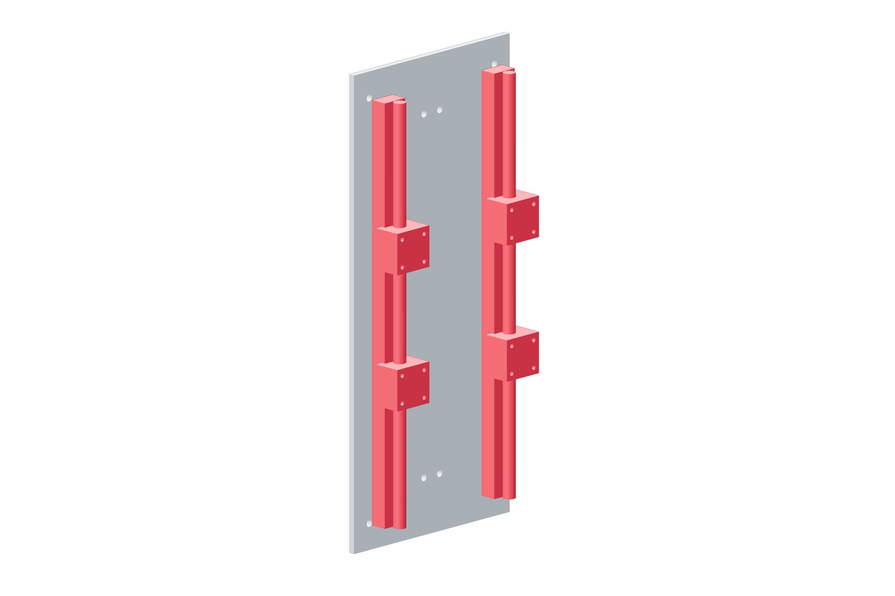

Structure / Z70 / 179
Align the Z guide pair
Two supported SBR12 rails carry four blocks. Their 140 mm center spacing and 128 mm block spacing come from the matching plate drawings.
Add2 SBR12 × 400 mm · 4 blocks · 16 M3 × 20 · two washers / locking nut per bolt
Tools / setupCaliper · straightedge · small hex keys · temporary support for Z

- Use one straight bed edge as the rail-direction datum; start all rail-foot fasteners loosely.
- Set rail centers 140 mm apart. Transfer the received rail-foot hole phase to the bed; do not assume the catalog hole phase.
- Slide two blocks onto each rail with their mounting holes facing the carriage.
- Seat the datum rail first. Leave the second rail free to align under the carriage in the next operation.
Ready when
All four blocks slide by hand and the rail pair matches the carriage hole pattern without pulling either rail sideways. A block that binds or a forced hole match indicates spacing/parallelism error. Release the second rail and correct the bed pattern before continuing.